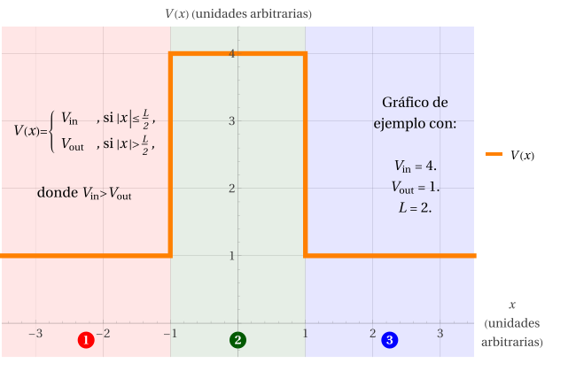

Barrera de potencial
Una barrera de potencial difiere del pozo en que \(V_\text{in}>V_\text{out}\).

La teoría general para una barrera de potencial finita tiene muchas similitudes con el pozo de potencial, pues la función de onda también se debe construir como una función con 3 tramos en cuyos límites se impone continuidad de la función de onda y de sus derivadas:
- ESIT:
\( -\dfrac{\hbar^2}{2m}\,\dfrac{d^2\psi_j}{dx^2}+V_j\,\psi_j=\mathcal{E}\,\psi_j, \) donde \( j=1,2,3, \) \( V_1=V_3=V_\text{out} \) y \( V_2=V_\text{in}. \)
- La ESIT es equivalente a \( \psi_j''(x)+k_j^2\,\psi_j(x)=0, \) donde \( k_j=\sqrt{\dfrac{2m}{\hbar^2}\,(\mathcal{E}-V_j)}\,. \)
- Soluciones \( \psi_j(x)=A_j\,e^{i k_j x}+B_j\,e^{-i k_j x}, \) donde los \(A_j\) y \(B_j\) son incógnitas.
- Para resolver los coeficientes, imponemos continuidad de \(\psi(x)\) y \(\psi'(x)\) para \(x=-\dfrac{L}{2}\) y para \(x=+\dfrac{L}{2}\).
- Parámetros auxiliares similares a los del pozo finito, con algunas diferencias:
- \(\Delta V=V_\text{in}-V_\text{out}\) se definirá como la “altura” de la barrera.
- \(\Delta\mathcal{E}=\mathcal{E}-V_\text{out}\) será cuánto sobresale la energía respecto del mínimo (afuera) del potencial.
- Reutilizamos las definiciones \( \eta=\Delta\mathcal{E}/\Delta V, \) \( \lambda_\text{dB}=\sqrt{\dfrac{2\pi^2\hbar^2}{m\,\Delta\mathcal{E}}} \) y \( \Lambda=L/\lambda_\text{dB}. \)
- Como consecuencia de las nuevas definiciones,
- \(k_\text{in}\) cambia a \[ k_\text{in}=\sqrt{\frac{2m}{\hbar^2}\,(\Delta\mathcal{E}-\Delta V)}=\sqrt{\frac{2m\,\Delta V}{\hbar^2}}\,\sqrt{\eta-1}\,. \]
- \(k_\text{out}\) cambia a \[ k_\text{out}=\sqrt{\frac{2m}{\hbar^2}\,\Delta\mathcal{E}}=\sqrt{\frac{2m\,\Delta V}{\hbar^2}}\,\sqrt{\eta}\,. \]
- Se mantiene \[ \Lambda=L\sqrt{\frac{m}{2\pi^2\hbar^2}\,\Delta\mathcal{E}}=\frac{L}{2\pi}\sqrt{\frac{2m\,\Delta V}{\hbar^2}}\,\sqrt{\eta}\,. \]